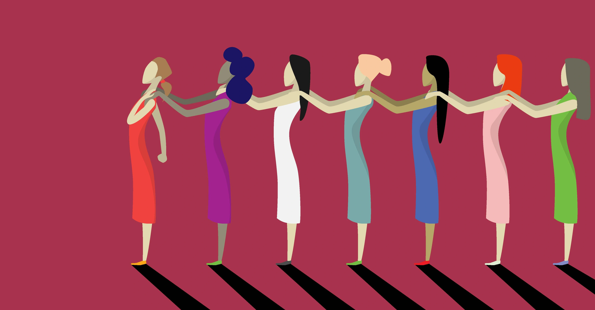
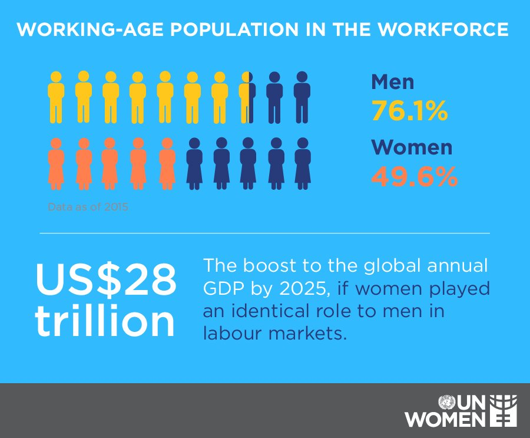

التأثير المحتمل
إن فهم تأثيرات عدم المساواة بين الجنسين في الولايات المتحدة أمر بالغ الأهمية لأنه يمكن أن يحد من مجموعة المواهب ، ويعيق النمو الاقتصادي ، ويديم الفقر ، ويزيد من التفاوتات الاجتماعية.
فلسطين
أدى الصراع المستمر إلى زيادة العنف ضد المرأة. ومع ذلك ، بُذلت جهود لمعالجة هذه المسألة ، مثل إنشاء ملاجئ للنساء ضحايا العنف وحملات التوعية لتحدي المواقف الثقافية التي تديم العنف ضد المرأة.
نيويورك
انخفاض الناتج المحلي الإجمالي: يمكن أن يؤدي عدم المساواة بين الجنسين في فرص العمل إلى انخفاض في الناتج المحلي الإجمالي لبلد أو ولاية. وفقًا لتقرير صادر عن معهد ماكينزي العالمي ، يتم سد الفجوة بين الجنسين في القوى العاملة
على العموم
الإمكانيات الضائعة: عدم المساواة بين الجنسين في فرص العمل يعني أن المجتمعات لا تستفيد إلى أقصى حد من مواهب ومهارات نصف سكانها.